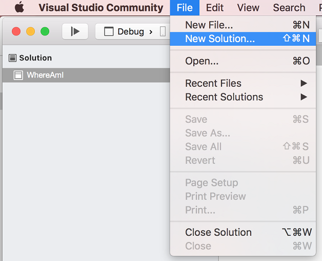
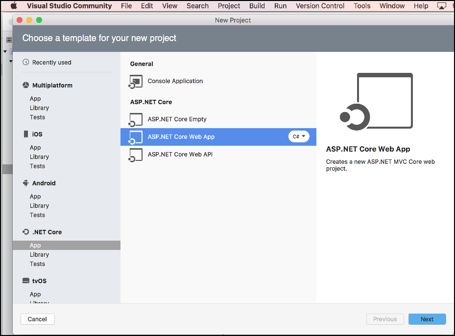
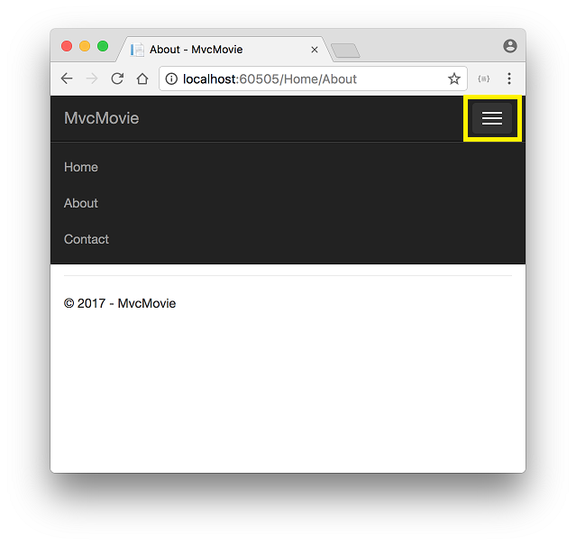

Getting started with ASP.NET Core MVC and Visual Studio for Mac
This tutorial teaches you the basics of building an ASP.NET Core MVC web app using Visual Studio for Mac. This tutorial teaches ASP.NET Core MVC with controllers and views. Razor Pages is a new alternative in ASP.NET Core 2.0, a page-based programming model that makes building web UI easier and more productive. We recommend you try the Razor Pages tutorial before the MVC version. For a Razor Pages version of this tutorial, see Razor Pages.
There are 3 versions of this tutorial:
- macOS: Build an ASP.NET Core MVC app with Visual Studio for Mac
- Windows: Build an ASP.NET Core MVC app with Visual Studio
- Linux, macOS, and Windows: Build an ASP.NET Core MVC app with Visual Studio Code
Prerequisites
This tutorial requires the .NET Core 2.0.0 SDK or later. See the pdf for the ASP.NET Core 1.1 version.
Install the following:
- .NET Core 2.0.0 SDK or later
- Visual Studio for Mac
Create a web app
From Visual Studio, select File > New Solution.

Select .NET Core App > ASP.NET Core > Web App > Next.

Name the project MvcMovie, and then select Create.

Launch the app
In Visual Studio, select Run > Start Without Debugging to launch the app. Visual Studio starts IIS Express, launches a browser, and navigates to http://localhost:port, where port is a randomly chosen port number.

- The address bar shows
localhost:port#and not something likeexample.com. That's becauselocalhostis the standard hostname for your local computer. When Visual Studio creates a web project, a random port is used for the web server. When you run the app, you'll see a different port number. - You can launch the app in debug or non-debug mode from the Run menu.
The default template gives you Home, About and Contact links. The browser image above doesn't show these links. Depending on the size of your browser, you might need to click the navigation icon to show them.

In the next part of this tutorial, you learn about MVC and start writing some code.